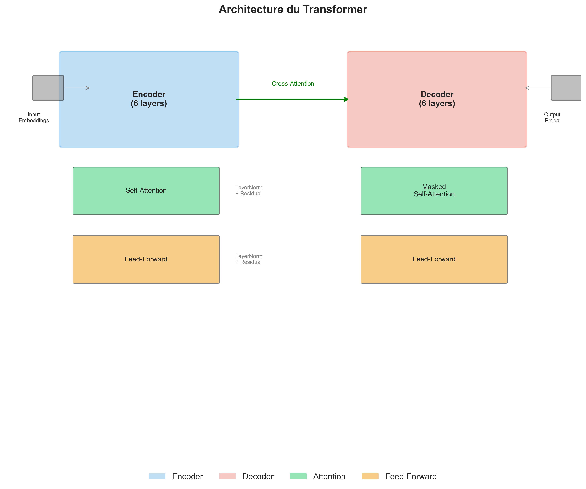
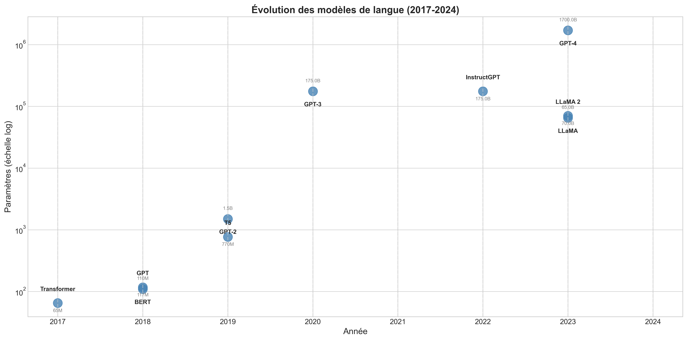
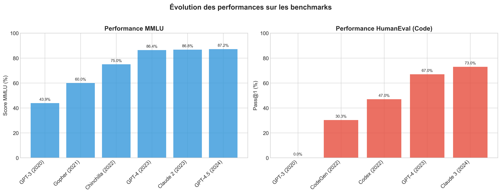
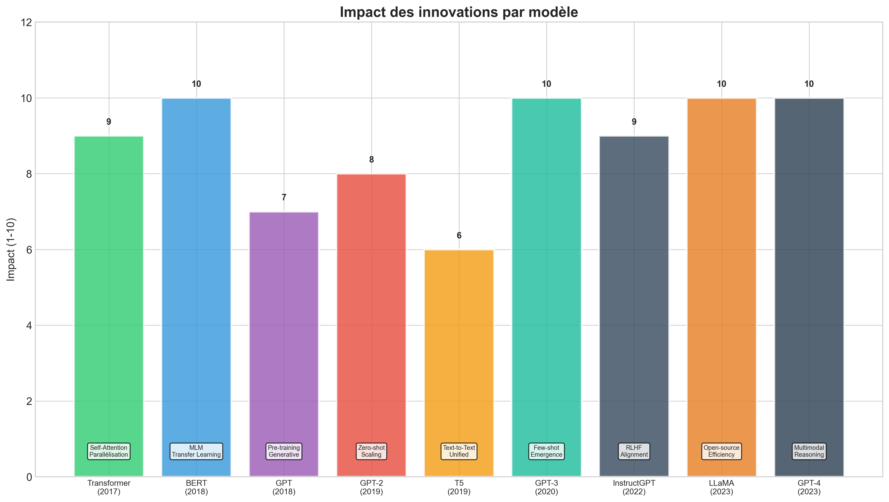
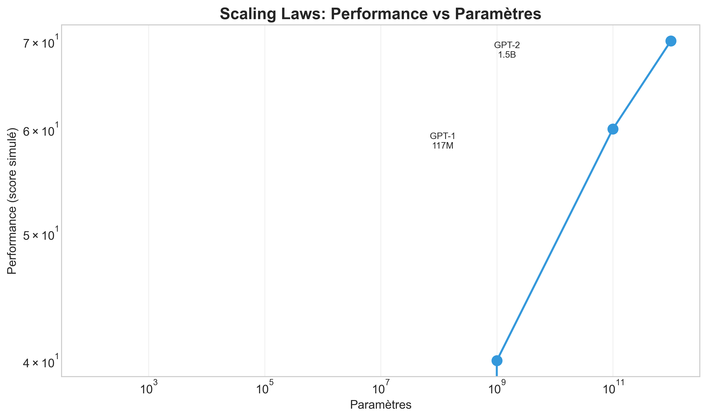

Une analyse approfondie de l'évolution des Grands Modèles de Langue, des architectures fondatrices aux modèles multimodaux actuels.
Objectifs et contexte de l'étude
Cartographier l'évolution des modèles de langue de 2017 à 2024, identifier les innovations majeures et analyser les tendances futures.
Recherche documentaire sur Papers With Code, Semantic Scholar et arXiv. Analyse en deux passes: modèles puis mécanismes.
Étude couvrant 7 années d'innovation intense: du Transformer (2017) aux modèles multimodaux (2024).
Le Traitement du Langage Naturel (NLP) est un domaine de l'IA qui se concentre sur l'interaction entre les ordinateurs et le langage humain. Les Grands Modèles de Langue (LLM) ont révolutionné ce domaine depuis 2017.
Changements de paradigme, percées de précision, nouveaux usages
Changement de Paradigme: Traitement parallèle O(1) vs séquentiel O(n)
Percée de Précision: WMT 2014 EN-DE: 28.4 BLEU (+12%)
WMT 2014 EN-FR: 41.8 BLEU (+7%)
Nouveaux Usages: Traduction automatique temps réel, résumé de documents longs
Changement de Paradigme: Pré-entraînement + Fine-tuning, modèle multi-tâches
Percée de Précision: GLUE: 78.3% (+14%), SQuAD 2.0: 83.1% (+6%)
11 tâches SOTA simultanément
Nouveaux Usages: Classification texte, NER, question answering
Changement de Paradigme: Few-shot/Zero-shot learning, capacités émergentes
Percée de Précision: TriviaQA: 64.3% (+34%), LAMBADA: 76.2% (+15%)
175B paramètres, émergence de capacités non entraînées
Nouveaux Usages: Chatbots, génération code basique, traductions zero-shot
Changement de Paradigme: RLHF pour alignement avec préférences humaines
Percée de Précision: Préférences humaines: 70% (+133%), Toxicité: -50%
Qualité instructions: +40%
Nouveaux Usages: ChatGPT (100M utilisateurs en 2 mois), assistants virtuels
Changement de Paradigme: Open-source + efficacité, transparence
Percée de Précision: LLaMA-70B: 72% MMLU (équivalent GPT-3.5)
60% moins de paramètres que GPT-3
Nouveaux Usages: Fine-tuning local, LoRA/QLoRA, Mistral/Qwen
| # | Progrès | Année | Innovation Clé | Impact |
|---|---|---|---|---|
| 1 | Transformer | 2017 | Self-Attention | Parallélisation |
| 2 | BERT | 2018 | MLM Bidirectionnel | Transfer Learning |
| 3 | GPT-3 | 2020 | Few-shot Émergence | Échelle |
| 4 | InstructGPT | 2022 | RLHF | Alignement |
| 5 | LLaMA | 2023 | Open-source Efficient | Démocratisation |
Encoder-only, Decoder-only, Encoder-Decoder
Contexte: Bidirectionnel
Usage: Classification, NER, QA
Exemples: BERT, RoBERTa, ALBERT
Traite le texte dans les deux directions pour une compréhension complète.
Contexte: Unidirectionnel (gauche)
Usage: Génération texte, code
Exemples: GPT, GPT-2, GPT-3, GPT-4
Prédit le mot suivant en ne regardant que le contexte gauche.
Contexte: Séparé (source→cible)
Usage: Traduction, résumé
Exemples: T5, BART, mBART
L'encodeur traite l'entrée, le décodeur génère la sortie.
| Architecture | Contexte | Direction | Usage Principal | Modèles |
|---|---|---|---|---|
| Encoder-only | Bidirectionnel | Gauche+Droite | Compréhension | BERT, RoBERTa |
| Decoder-only | Unidirectionnel | Gauche seule | Génération | GPT-1 à GPT-4 |
| Encoder-Decoder | Séparé | Bidirectionnel+Uni | Transformation | T5, BART |
Les fondations technologiques

Attention(Q,K,V) = softmax(QK^T / √d_k)V
Permet de capturer les dépendances à longue distance en parallèle.
Multiple heads en parallèle apprennent différentes relations sémantiques. h=8 heads, d_k=64 par head dans BERT-base.
Masked Language Modeling: 15% des tokens masqués → prédire. Permet l'apprentissage bidirectionnel.
Reinforcement Learning from Human Feedback: Alignement du modèle avec les préférences humaines.
Évolution des modèles de 2017 à 2024

Vaswani et al. (NeurIPS) - Self-Attention, WMT 28.4 BLEU, 65-213M params
Devlin et al. (NAACL) - MLM bidirectionnel, GLUE 78.3%, 110-340M
Radford et al. - Zero-shot learning, 1.5B paramètres
Raffel et al. - Text-to-Text, Encoder-Decoder, 770M-11B
Brown et al. - Few-shot emergence, 175B paramètres, LAMBADA 76.2%
Ouyang et al. - RLHF, 70% préférences humaines, ChatGPT
Touvron et al. - Open-source efficient, 7-65B, MMLU 68.2%
Meta AI - Open commercial, 7-70B, MMLU 69.4%
OpenAI - Multimodal, ~1.7T params, MMLU 86.4%
Métriques de performance

| Benchmark | Domaine | Métrique | GPT-4 |
|---|---|---|---|
| GLUE | Compréhension | Moyenne | 100+ |
| MMLU | Multitâche | Accuracy | 86.4% |
| HumanEval | Code | Pass@1 | 67% |
| BIG-Bench | Raisonnement | Average | 83.1% |
| GSM8K | Mathématiques | Accuracy | 92% |
| TriviaQA | QA | Exact Match | 70% |

Directions actuelles (2022-2026), questions ouvertes, limitations, recherches prometteuses
GPT-4V, Gemini traitent texte + image + audio + vidéo. Convergence des modalités.
Gemini 1.5: 1M tokens. Claude 3: 200K tokens. Vers des millions de tokens.
AutoGPT, Claude Code, Project Astra. Capacité de raisonnement autonome.
LoRA, QLoRA, quantization. Fine-tuning accessible.
• Les LLM comprennent-ils vraiment ?
• Peut-on parler de "vrai" raisonnement ?
• Comment expliquer l'émergence ?
• Vers une AGI possible ?
• Hallucinations: génération de faits faux
• Biais: reproduction de préjugés
• Coût énergétique: ~1000 tonnes CO2 (GPT-4)
• Contexte fini: maximum tokens
• State Space Models (Mamba)
• Reasoning autonome (CoT, Tool use)
• Edge deployment
• Alignement: DPO, Constitutional AI
• Désinformation: génération de faux contenus
• Cyberattaques: code malveillant
• Régulation: EU AI Act, US Executive Order

5 points clés à retenir
Architecture fondatrice permettant la parallélisation complète
Transfer Learning démocratisé via MLM bidirectionnel
Émergence de capacités à grande échelle (few-shot)
Alignement via RLHF - ChatGPT: 100M utilisateurs
Démocratisation open-source - Écosystème florissant
Format IEEE - 20 références
Version visuelle intégrée